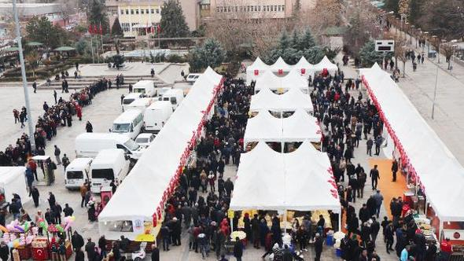

Kuymak dergimize abone olmayı unutmayın!

Rize Haberi: Kırıkkale'de 4 günlük Hamsi Şöleni

ANKARA Rizeliler Derneği ile Kırıkkale Belediyesi, Cumhuriyet Meydanı'nda 4 gün sürecek ve yaklaşık 3 ton hamsinin vatandaşlara ücretsiz dağıtılacağı Hamsi Şöleni'nin startını verdi. Ankara Rizeliler Derneği Başkanı İdris Kansızoğlu, Rize'yi bu kez Kırıkkale'de 4 gün süreyle tanıtacak olmanın heyecanını yaşadıklarını belirterek, vatandaşları hamsiye doyuracaklarını söyledi. Vatandaşlar, ekmek arası hamsi için uzun kuyruk oluşturdu.
Hamsi Şöleni'nin açılışına Kırıkkale Valisi M. İlker Haktankaçmaz, Belediye Başkanı Mehmet Saygılı, Jandarma Komutanı Albay İsa Çakmak, Emniyet Müdürü Mahmut Çorumlu, İl Genel Meclisi Başkanı Murat Çaykara, il müdürleri, Ankara Rizeliler Derneği Başkanı İdris Kansızoğlu, Kırıkkale Karadenizliler Derneği Başkanı Sedat Kaygusuz, Bahşılı Belediye Başkanı İbrahim Uyar ile birlikte vatandaşlar katıldı.
Hamsi Şöleni ile Karadeniz'in hamsi kızartması, hamsi mıhlaması, kara lahanası, mısır ekmeği, laz böreği ve çayını tanıtılacaklarını belirten İdris Kansızoğlu, "Hamsi şölenlerimiz Türkiye'de devam ediyor. Başlangıcını Ankara'da Keçiören ve Yenimahalle'de yaptık. Daha sonra Kırıkkale'de Belediye ve Karadenizliler Derneğimiz ile beraber yaptık. Hamsi Şöleni ile Rizemizi dünyaya tanıtacağız. Rizemiz zaten Türkiye'ye sığmıyor, dünyaya tanıtmaya devam ediyoruz. 22 tane metropol ilimiz var. Rizemizin hamsisini, buğulamasını, kara lahanasını, özellikle ÇAYKUR'umuzun çayını Kırıkkale'ye tanıtmaya geldik. Gösterilen ilgiden çok memnunuz, Kırıkkale halkına teşekkür ediyorum" dedi.
Cumhuriyet Meydanı'ndaki Hamsi Şöleni'nin ardından açılan stantları gezen protokol, 'hayırlı işler' dileğinde bulundu. Rizeliler Derneği tarafından vali ve beraberindekilere hamsi ile birlikte Karadeniz yöresine özgü ürünlerinden oluşan ikramda bulunuldu. Vali Haktankaçmaz ve Belediye Başkanı Mehmet Saygılı, pazar gününe kadar devam edecek Hamsi Şöleni'nin kente ayrı bir renk getireceğini söylediler. Ücretsiz dağıtılan ekmek arası hamsi ve çay ikramı için vatandaşlar uzun kuyruklar oluşturdu.